음악은 비어 있습니다. ① 사진·영상 저장(사진은 길게 눌러 저장해도 됩니다) → ② 인스타 앱 ＋ → 릴스 → 저장한 사진·영상 → 「오디오」에서 음원 고르기 → ③ 본문 복사해 붙여 넣고 올리기. 본문을 그대로 두면 다음 릴스가 생길 때 「인스타에 올림」 표시가 붙고 아래로 내려갑니다. 사진·영상은 올렸든 안 올렸든 3일이 지나면 지워집니다.
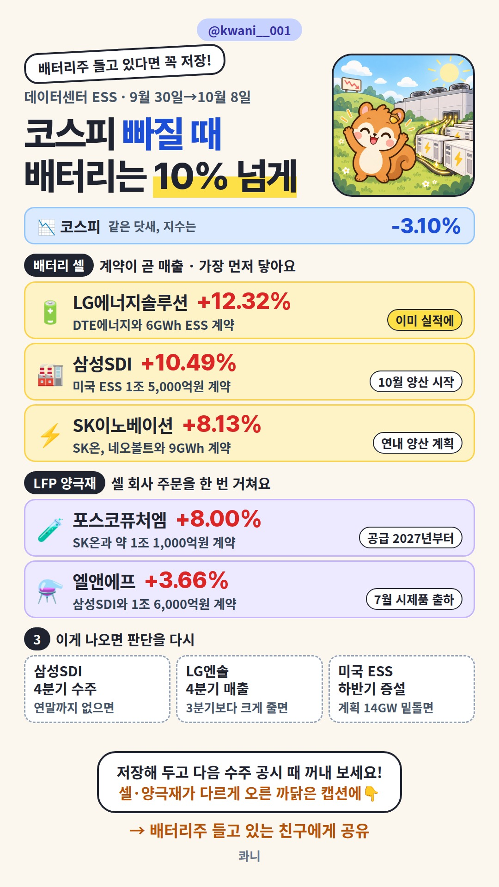
배터리주 들고 계신데 '같은 ESS 관련주인데 왜 오름폭이 다르지?' 싶었던 분, 꼭 저장해 두세요👀 10월 첫 다섯 거래일, 코스피는 3.10% 빠졌어요. 그런데 LG에너지솔루션은 12.32%, 삼성SDI는 10.49% 올랐어요. 배터리주를 다시 끌어올린 말은 '데이터센터용 ESS'였어요. 그래서 셀부터 양극재까지 회사별로 계약이 어디까지 왔는지 한 장에 정리했어요. 📌 왜 지금 ESS인가 ESS는 전기를 저장해 뒀다가 꺼내 쓰는 대형 배터리 설비예요. 미국 대형 배터리 저장 용량은 2026년 상반기에만 8.3GW 늘었고, 하반기 계획이 14GW예요(EIA). 10월 6일엔 미국이 전력망에서 중국산 부품을 빼는 정책까지 겹쳐 하루에 삼성SDI가 8.70% 뛰었어요. 📌 셀이 먼저, 소재는 나중 셀 회사는 계약 금액이 그대로 매출로 이어져요. LG에너지솔루션 3분기 매출은 9조 6,434억원으로 분기 최대였어요. 양극재 회사는 셀 회사 주문을 한 번 거치고, 공급도 대부분 2027년부터라 오름폭이 작았어요. 📌 증권가가 본 것 DS투자증권은 삼성SDI의 4분기 수주 발표를 점치고 2026년 영업이익을 5,303억원으로 봤어요. 다만 자동차 부문은 BMW 물량 공백으로 부진하다고 같이 적었어요. 여러분은 이번 배터리주 반등, 계약으로 보시나요 기대로 보시나요? 댓글로 알려 주세요. 📎 회사별 계약 전체는 프로필 링크 블로그에 있어요. 저장해 두고 다음 수주 공시 때 꺼내 보세요! 👉 배터리주 들고 있는 친구에게 공유해 주세요 👉 매일 증시 이슈 정리는 @kwani__001 팔로우 #ESS관련주 #데이터센터ESS #배터리주 #LFP #삼성SDI
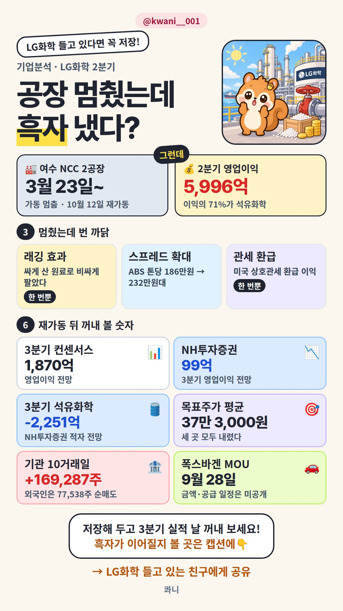
LG화학 들고 계신데 '공장 멈췄다는데 왜 흑자지?' 싶었던 분, 꼭 저장해 두세요👀 여수 NCC 2공장은 3월 23일부터 서 있었어요. 그런데 2분기 영업이익은 5,996억원, 그중 71%인 4,265억원을 석유화학이 냈어요. 그 공장이 10월 12일 다시 돌아요. 그래서 흑자의 까닭과 재가동 뒤 볼 숫자를 한 장에 정리했어요. 📌 멈췄는데 번 까닭 판 물량은 줄었지만 한 개당 남는 돈이 커졌어요. 미리 싸게 사 둔 원료로 만든 제품을 오른 값에 팔았고(래깅 효과), 제품값과 원료값 차이인 스프레드도 벌어졌어요. 여기에 미국 상호관세 환급이라는 일회성 이익이 더해졌어요. 📌 재가동이 곧 이익은 아니에요 공장이 돌면 판매량은 늘지만, 스프레드가 좁아지면 물량이 곧 이익이 되지는 않아요. NH투자증권은 래깅과 일회성 이익이 빠지면 3분기 석유화학이 적자로 돌아선다고 봤어요. 📌 갈림길은 3분기 실적 석유화학 적자 폭이 컨센서스 1,870억원과 NH투자증권 99억원 사이 어디에 떨어지는지가 본업 체력을 보여 줘요. 📌 오래 볼 것 폭스바겐 MOU와 파쿠마 2026의 엔지니어링플라스틱이 공급 계약으로 공시되는지예요. 여러분은 재가동이 실적에 득일까요, 부담일까요? 댓글로 알려 주세요. 📎 목표주가 세 곳과 지표는 프로필 링크 블로그에 있어요. 저장해 두고 3분기 실적 날 꺼내 보세요! 👉 LG화학 들고 있는 친구에게 공유해 주세요 👉 매일 장마감 핵심은 @kwani__001 팔로우 #LG화학 #LG화학주가 #석유화학 #엔지니어링플라스틱 #여수NCC
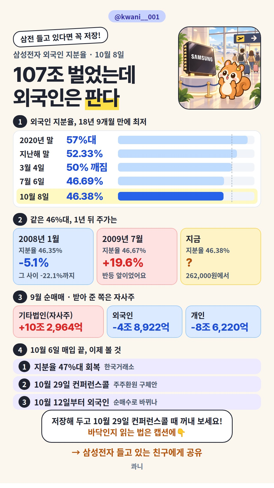
삼성전자 들고 계신데 '실적은 역대급인데 주가는 왜 이래?' 싶었던 분, 꼭 저장해 두세요👀 10월 8일 삼성전자는 3분기 영업이익 107조 4,000억원, 사상 최대 잠정실적을 냈어요. 그런데 그날 주가는 2.42% 내렸고, 외국인 지분율은 46.38%로 2008년 1월 이후 가장 낮았어요. 그래서 외국인이 어디까지 팔았고, 누가 받아 줬는지 한 장에 정리했어요. 📌 받아 주던 쪽이 사라졌어요 외국인 물량은 그동안 삼성전자 자신이 받았어요. 8월 24일 시작한 15조원 자사주 매입이 하루 5,000억원 이상씩 샀거든요. 자사주는 기타법인으로 잡혀요. 그 매입이 10월 6일 끝났어요. 📌 삼성전자만의 일은 아니에요 외국인은 올해 코스피에서 197조원 넘게 팔았고, SK하이닉스 지분율도 49.59%로 50% 선이 깨졌어요. 두 종목이 코스피 시총의 약 51.2%라 지수도 같이 눌려요. 📌 46%대면 바닥일까 2008년과 2009년, 같은 46%대 뒤 주가는 정반대로 갔어요. 매도를 부른 이유가 남아 있으면 낮은 지분율도 더 낮아질 수 있어요. 실적만 보고 기다리기보다 매도가 멈추는 조짐을 먼저 보는 게 맞아 보여요. 📌 증권가도 갈렸어요 목표주가는 유안타 63만원부터 BNK 27만원까지예요. 메모리 증설 뒤에도 이익이 이어질지에서 답이 갈렸어요. 여러분은 외국인이 언제쯤 돌아올 거라 보시나요? 댓글로 알려 주세요. 📎 블로그 전문은 프로필 링크에 있어요. 저장해 두고 10월 29일 컨퍼런스콜 때 꺼내 보세요! 👉 삼성전자 들고 있는 친구에게 공유해 주세요 👉 매일 장마감 핵심은 @kwani__001 팔로우 #삼성전자 #삼성전자주가 #외국인지분율 #외국인순매도 #반도체주
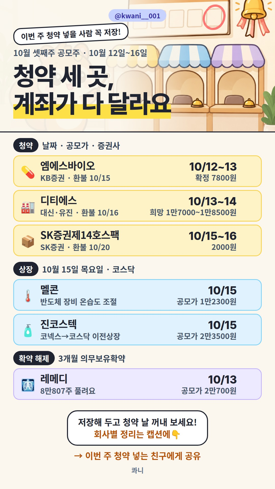
이번 주 공모주 청약 넣을 계획이라면 꼭 저장해 두세요👀 레메디 청약 때 10주를 넣은 사람 절반 넘게 1주도 못 받았어요. 사람이 몰리면 균등배정도 추첨이 되거든요. 이번 주는 월요일부터 금요일까지 청약이 이어지고, 세 곳의 증권사가 모두 달라요. 그래서 10월 셋째주(10월 12일~16일) 공모주를 한 장에 정리했어요. 📌 엠에스바이오 · 10/12~13 · KB증권 인체조직 이식재와 의료기기, 눈에 쓰는 양막렌즈를 만드는 회사예요. 확정 공모가 7800원은 희망 범위 상단이에요. 수요예측 2269건 중 96.6%가 상단을 써냈어요. 환불 10/15. 📌 디티에스 · 10/13~14 · 대신·유진투자증권 플랜트용 공랭식 열교환기를 만들고, 최대주주는 다산네트웍스예요. 희망 1만7000~1만8500원이고 확정 공모가는 12일에 나와요. 환불 10/16. 📌 SK증권제14호스팩 · 10/15~16 · SK증권 합병할 회사가 아직 없는 스팩이에요. 공모가 2000원, 환불은 주말을 지나 10/20. 📌 15일 상장 · 멜콘 · 진코스텍 멜콘은 반도체 장비 온습도 조절(공모가 1만2300원), 진코스텍은 코넥스에서 옮겨 오는 이전상장(2만3500원)이에요. 📌 13일 확약 해제 · 레메디 3개월 확약 8만807주가 풀려요. 10월 8일 종가 1만7320원은 공모가 2만700원보다 16.3% 낮아요. 디티에스 확정 공모가와 정정신고서는 DART에서 다시 확인하세요. 여러분은 균등배정 1주라도 받아 보셨나요? 댓글로 알려 주세요. 📎 균등·비례 배정 풀이는 프로필 링크 블로그에 있어요. 저장해 두고 청약 날 꺼내 보세요! 👉 이번 주 청약 넣는 친구에게 공유해 주세요 👉 매주 공모주 일정은 @kwani__001 팔로우 #공모주 #공모주일정 #공모주청약 #균등배정 #스팩공모주
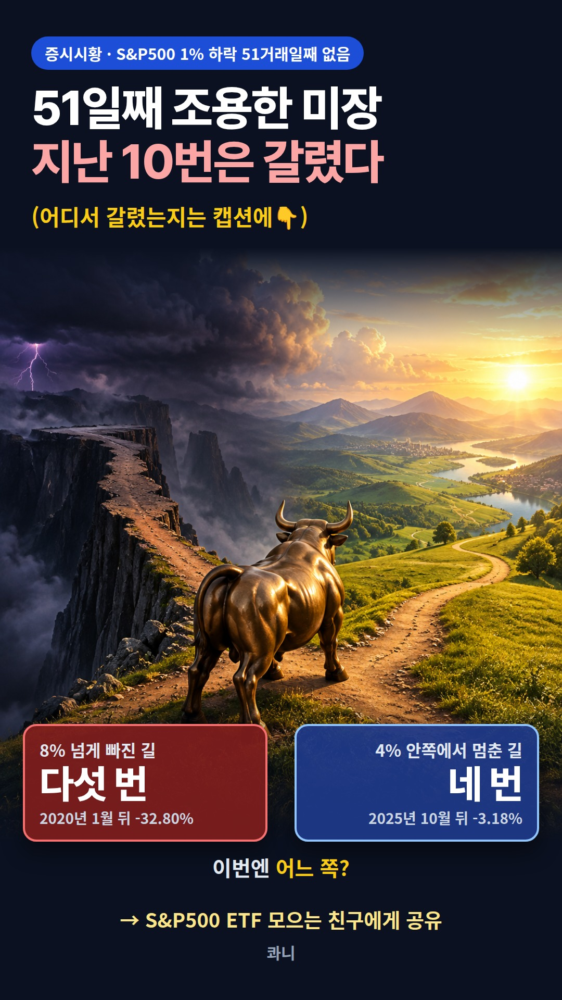
S&P500이 51거래일째 하루 1%도 안 빠졌어요. 지난 열 번, 이런 기록이 깨진 뒤엔 둘로 갈렸습니다. 어디서 갈렸는지 정리했어요👇 📌 지금 기록 (10월 9일 종가) · 7월 29일(-1.52%) 뒤로 1% 넘게 빠진 날 없음 · 2024년 7월 52거래일 이후 가장 긴 기록 · 그동안 지수는 6.77% 올라 7,811.54 📌 지난 열 번, 깨진 뒤 60거래일 안 🔻 8% 넘게 빠진 다섯 번 2018년 1월 -10.16% · 2018년 10월 -19.78% 2020년 1월 -32.80% · 2023년 8월 -8.76% 2024년 7월 -8.49% 🔹 4% 안쪽에서 멈춘 네 번 2017년 3월 · 2017년 8월 · 2019년 3월 · 2025년 10월 📌 기록 길이도, 깨진 날 낙폭도 답이 아니었어요 112거래일은 -10.16%, 109거래일은 -2.80%였어요. 2024년 7월은 -1.39%로 깨지고 8% 넘게 빠졌고, 2025년 10월은 -2.71%로 깨졌지만 -3.18%에서 멈췄죠. 📌 갈린 곳은 깨진 뒤 열흘 1️⃣ 1% 하락이 또 나오나 — 8% 넘게 빠진 다섯 번은 열흘 안에 두 번 이상 나왔어요 2️⃣ VIX가 30을 넘나 — 그중 네 번은 30을 넘었어요(지금 15.41, 10월 8일) 3️⃣ 미 10년물이 5.31%를 넘나 — 10월 5일 고점이에요 둘 이상 겹치면 '조용한 장'이라는 판단을 다시 볼 때예요. 여러분은 이번 기록이 몇 거래일까지 갈 것 같으세요? 댓글로 알려 주세요. 📎 열 번의 기록 전체는 프로필 링크 블로그에 있어요. 저장해 두고 1% 넘게 빠지는 날 꺼내 보세요! 👉 S&P500 ETF 모으는 친구에게 공유해 주세요 👉 미국 증시 정리를 계속 받아 보려면 @kwani__001 팔로우 #S&P500 #미국증시 #VIX #S&P500ETF #미국주식
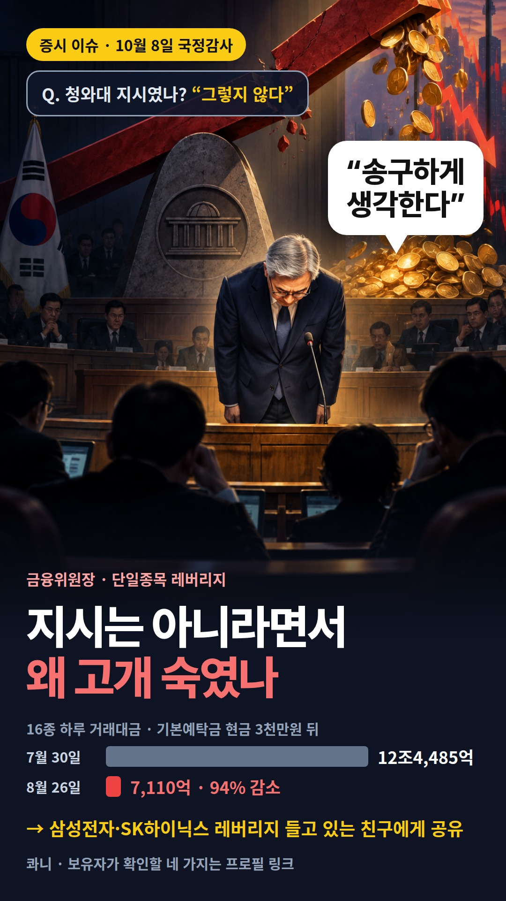
청와대 지시는 아니라는데 금융위원장은 왜 사과했을까요? 단일종목 레버리지 국감 내용을 정리했어요. ✔️ 16종 하루 거래대금 7월 30일 12조4,485억원 → 8월 26일 7,110억원 ✔️ 추가 매수엔 기본예탁금 현금 3천만원 여러분은 단일종목 레버리지 규제, 어떻게 보시나요? 댓글로 알려 주세요. 📌 보유자가 확인할 네 가지는 프로필 링크 블로그에 정리해 뒀어요. 저장해 두고 다음 발표 때 꺼내 보세요! 👉 삼성전자·SK하이닉스 레버리지 들고 있는 친구에게 공유해 주세요 👉 증시 이슈 정리를 계속 받아 보려면 @kwani__001 팔로우 #단일종목레버리지 #레버리지ETF #금융위원회 #국정감사 #주식공부
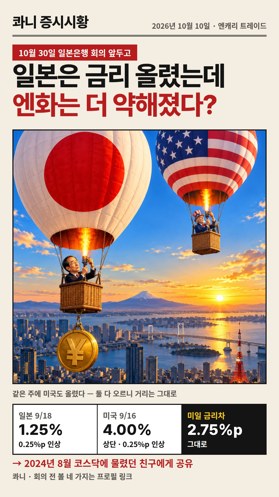
일본은 금리를 올렸는데 엔화는 더 약해졌어요. 엔캐리 트레이드 청산이 다시 올지 정리했어요. ✔️ 일본은행 9월 18일 연 1.25%, 미국 연준도 같은 주 인상 ✔️ 미일 금리차 2.75%p 그대로, 10월 인상 기대치 0.31회 여러분은 10월 30일 일본은행이 또 올린다고 보시나요? 댓글로 알려 주세요. 📌 회의 전 볼 네 가지는 프로필 링크 블로그에 정리해 뒀어요. 저장해 두고 10월 30일에 꺼내 보세요! 👉 2024년 8월 코스닥에 물렸던 친구에게 공유해 주세요 👉 매일 시장 이슈 정리는 @kwani__001 팔로우 #엔캐리트레이드 #일본금리인상 #일본은행 #엔화환율 #미일금리차
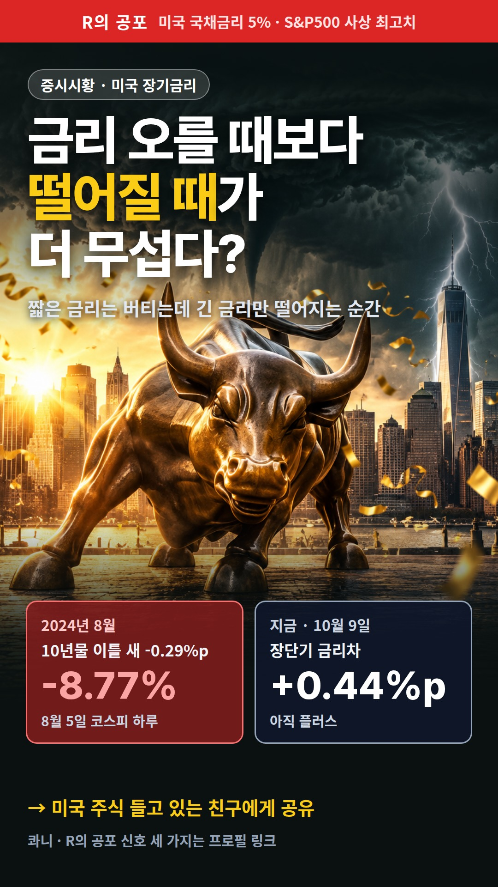
미국 국채금리 5% 넘었는데 S&P500은 사상 최고치, 진짜 공포는 장기금리 하락이라는 까닭을 정리했어요. ✔️ 10월 9일 장단기 금리차 +0.44%p, 아직 플러스 ✔️ 2024년 8월엔 10년물이 이틀 새 0.29%p 빠진 뒤 코스피 -8.77% 여러분은 금리 뉴스 볼 때 무엇부터 확인하시나요? 댓글로 알려 주세요. 📌 R의 공포 신호 세 가지는 프로필 링크 블로그에 정리해 뒀어요. 저장해 두고 금리 뉴스 나올 때 꺼내 보세요! 👉 미국 주식 들고 있는 친구에게 공유해 주세요 👉 미국 금리 흐름을 계속 받아 보려면 @kwani__001 팔로우 #R의공포 #미국국채금리 #장기금리하락 #미국증시
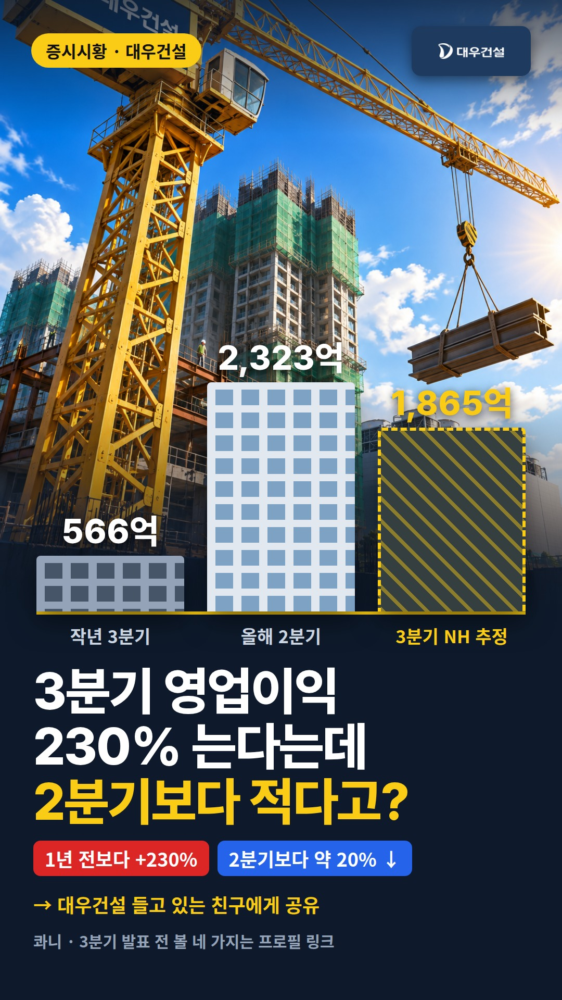
영업이익 230% 는다는데 2분기보다 적다? 대우건설 3분기 셈법을 정리했어요. ✔️ NH투자증권 3분기 추정 1,865억원, 2분기 실제는 2,323억원 ✔️ 10월 8일 조직개편: 도시정비 3개 팀, 데이터센터사업팀, 안전품질본부 여러분은 3분기 발표에서 무엇부터 보시나요? 댓글로 알려 주세요. 📌 3분기 발표 전 확인할 네 가지는 프로필 링크 블로그에 정리해 뒀어요. 저장해 두고 실적 발표 날 꺼내 보세요! 👉 대우건설 들고 있는 친구에게 공유해 주세요 👉 이슈 하나를 끝까지 파는 정리를 받아 보려면 @kwani__001 팔로우 #대우건설 #대우건설주가 #도시정비사업 #건설주
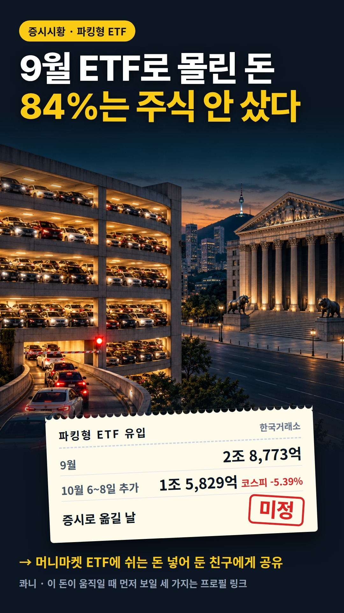
코스피는 9월 한 달 0.26% 제자리인데, ETF에 들어온 돈의 84%는 파킹형 ETF로 갔어요. ✔️ 9월 파킹형 ETF 유입 2조 8,773억 ✔️ 코스피 사흘 -5.39% 빠진 10월 6~8일에도 1조 5,829억 더 ✔️ 오른 날 13일 중 10일에도 돈이 들어왔어요 여러분은 쉬는 돈 어디에 세워 두고 계신가요? 댓글로 알려 주세요. 📌 이 돈이 움직일 때 먼저 보일 세 가지는 프로필 링크 블로그에 정리해 뒀어요. 저장해 두고 다음 장 열릴 때 꺼내 보세요! 👉 머니마켓 ETF에 쉬는 돈 넣어 둔 친구에게 공유해 주세요 👉 매일 증시 흐름 정리는 @kwani__001 팔로우 #파킹형ETF #머니마켓ETF #코스피 #투자자예탁금
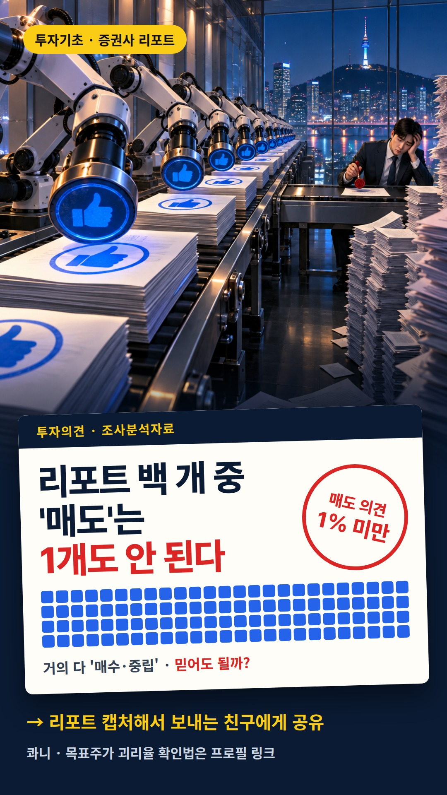
증권사 리포트 매도 의견은 1%도 안 돼요. 그럼 리포트 의견은 어떻게 읽어야 할까요? ✔️ 리포트에는 과거 2년 목표주가 변동추이가 실려요 ✔️ 괴리율로 그 증권사 숫자가 얼마나 맞아 왔는지 봐요 ✔️ IR 자료는 KIND IR자료실에서 직접 받아요 여러분은 리포트에서 무엇부터 보시나요? 댓글로 알려 주세요. 📌 괴리율 계산법은 프로필 링크 블로그에 정리해 뒀어요. 저장해 두고 다음 리포트 볼 때 꺼내 보세요! 👉 리포트 캡처해서 보내는 친구에게 공유해 주세요 👉 투자기초 정리를 계속 받아 보려면 @kwani__001 팔로우 #증권사리포트 #목표주가 #IR자료 #주식공부
1999년에 반도체를 접은 LG가 27년 만에 차량용 칩 설계에 다시 나섰어요. ✔️ LG전자 베이스 칩 + 보스반도체 AI 칩, 하나마이크론이 검증·패키징 ✔️ 차량용 반도체 국산화율은 5% 수준 ✔️ 보쉬 공급은 '논의 중' 보도까지, 계약 발표는 아직 여러분은 이 협력이 실제 공급 계약으로 이어질 거라고 보시나요? 댓글로 알려 주세요. 📌 다음 거래일 전에 확인할 세 가지는 프로필 링크 블로그에 정리해 뒀어요. 저장해 두고 공시 나올 때 꺼내 보세요! 👉 LG전자 들고 있는 친구에게 공유해 주세요 👉 증시 이슈 정리를 계속 받아 보려면 @kwani__001 팔로우 #LG전자 #차량용반도체 #칩렛 #보스반도체
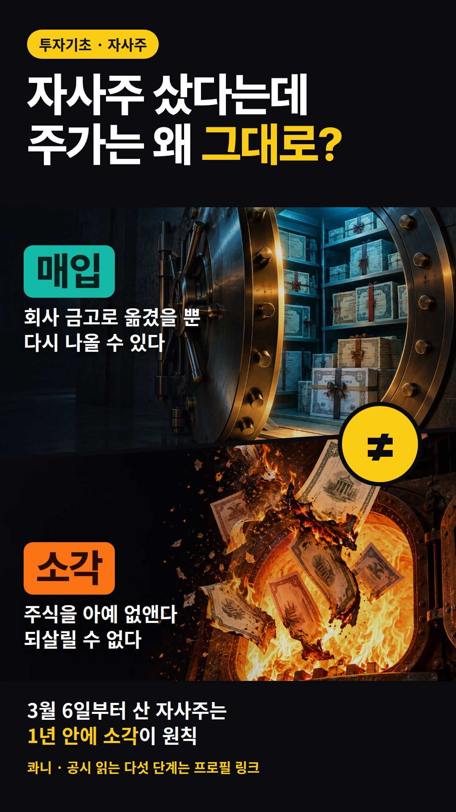
자사주를 샀다는 공시와 소각한다는 공시는 서로 다른 이야기예요. ✔️ 2026년 3월 6일부터 산 자사주는 1년 안에 소각이 원칙 ✔️ 남기려면 보유처분계획을 매년 주총에서 승인 ✔️ 시행 전부터 가진 자사주는 1년 6개월 안 여러분은 자사주 공시에서 어느 칸부터 보시나요? 댓글로 알려 주세요. 📌 공시 읽는 다섯 단계는 프로필 링크 블로그에 정리해 뒀어요. 저장해 두고 자사주 공시 뜰 때 꺼내 보세요! 👉 주식 제도 기초를 계속 받아 보려면 @kwani__001 팔로우 #자사주소각 #자사주매입 #자기주식 #상법개정 #주식공부
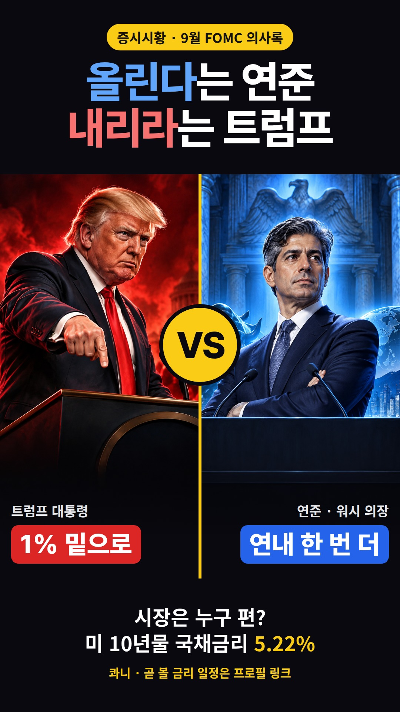
연준은 연내 한 번 더 올린다는데 트럼프는 1% 밑으로 내리라고 해요. 9월 FOMC 의사록을 정리했어요. ✔️ 대부분의 참석자 "연내 한 번 더 인상 적절" ✔️ 내년 말 점도표 중간값 3.6% → 4.1% ✔️ 미 10년물 국채금리 5.22% (10월 8일) 여러분은 연준이 10월에 올릴 거라고 보시나요? 댓글로 알려 주세요. 📌 곧 볼 금리 일정은 프로필 링크 블로그에 정리해 뒀어요. 저장해 두고 다음 지표 나올 때 꺼내 보세요! 👉 증시 이슈 정리를 계속 받아 보려면 @kwani__001 팔로우 #FOMC의사록 #미국금리인상 #점도표 #트럼프
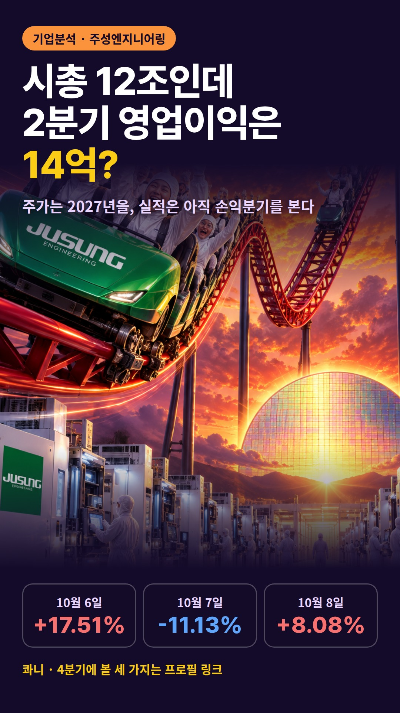
2분기 영업이익 14억인데 시총 12조, 주성엔지니어링에 돈이 몰린 까닭을 정리했어요. ✔️ 10월 8일 장중 코스닥 시총 2위, 거래대금 9,878억 ✔️ 상반기 말 수주잔액 2,336억, 전 분기의 약 3배 ✔️ 증권가 평균 목표주가는 아직 주가 아래 여러분은 실적과 주가 사이 이 간격, 어떻게 보시나요? 댓글로 알려 주세요. 📌 4분기에 확인할 세 가지는 프로필 링크 블로그에 정리해 뒀어요. 저장해 두고 3분기 실적 나올 때 꺼내 보세요! 👉 반도체 장비주 정리를 계속 받아 보려면 @kwani__001 팔로우 #주성엔지니어링 #반도체장비 #소부장 #코스닥 #주식공부
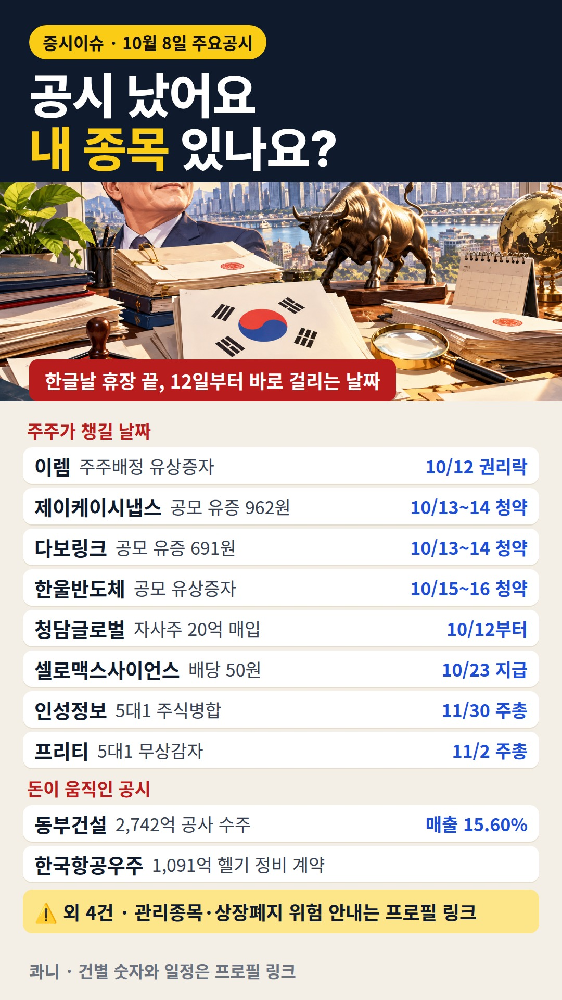
10월 8일 주요공시, 내 종목 있나요? 거래정지·상장폐지 위험까지 정리했어요. ✔️ 이렘 주주배정 유상증자 · 권리락 10월 12일, 청약 11월 25~26일 ✔️ 인성정보 5대1 병합 · 프리티 5대1 감자, 거래정지 기간 확인 ✔️ 동부건설 2,742억 수주, 매출의 15.60% ✔️ 메디앙스·씨씨에스충북방송·빅텐츠·이오플로우 상장 위험 안내 여러분은 공시가 나오면 어떤 것부터 확인하시나요? 댓글로 알려 주세요. 📌 건별 숫자와 일정은 프로필 링크 블로그에 정리해 뒀어요. 저장해 두고 날짜가 다가오면 꺼내 보세요! 👉 매일 주요공시 정리는 @kwani__001 팔로우 #주요공시 #유상증자 #주식병합 #공시 #주식공부
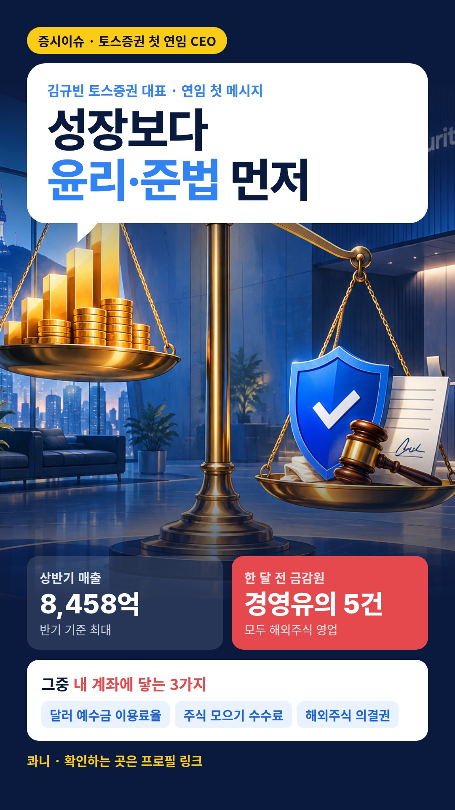
토스증권 첫 연임 CEO, 첫 과제는 성장이 아니라 윤리·준법이었어요. ✔️ 상반기 매출 8,458억, 반기 최대 ✔️ 9월 금감원 경영유의 5건 — 외화예탁금 이용료율·주식 모으기 표시 포함 여러분은 달러 예수금 이용료율 확인해 보셨나요? 댓글로 알려 주세요. 📌 이용자가 볼 세 가지는 프로필 링크 블로그에 정리해 뒀어요. 저장해 두고 앱 켤 때 꺼내 보세요! 👉 증권가 이슈 정리를 계속 받아 보려면 팔로우해 주세요 #토스증권 #김규빈 #해외주식 #외화예탁금 #주식공부